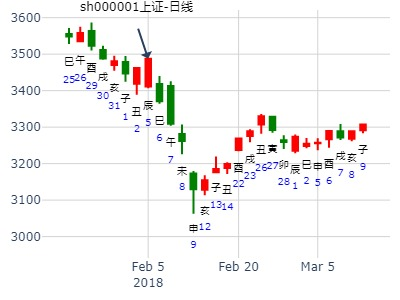
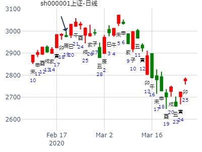
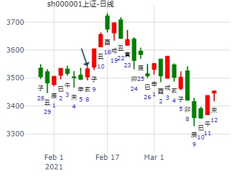
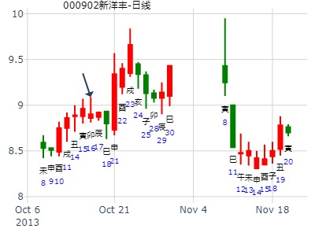
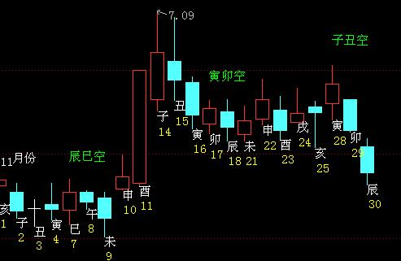

主帖标题: 2018上证指数最高只能到3800
公历：2018年1月8日12时13分，星期一。
干支：丁酉年 癸丑月 庚子日 壬午时 (卦身：寅)
主变卦 泽雷随(震宫-归魂) [空亡:辰、巳]
螣蛇 ▅▅ ▅▅ 妻财丁未土 应
勾陈 ▅▅▅▅▅ 官鬼丁酉金
朱雀 子孙庚午火 ▅▅▅▅▅ 父母丁亥水
青龙 ▅▅ ▅▅ 妻财庚辰土 世
玄武 ▅▅ ▅▅ 兄弟庚寅木
白虎 ▅▅▅▅▅ 父母庚子水
王阳明子，如果您要查看本帖隐藏内容请回复
主帖标题: 2018年股市测算[纯周易测算]
公历起卦时间：2018年2月4日6时19分 (手工指定】
干支：戊戌年 甲寅月 丁卯日 癸卯时 （日空：戌亥）
震宫：泽雷随 (归魂) 震宫：泽雷随 (归魂)
六神 伏神 本 卦 变 卦
青龙 妻财丁未土 ▅▅ ▅▅ 应 妻财丁未土 ▅▅ ▅▅ 应
玄武 官鬼丁酉金 ▅▅▅▅▅ 官鬼丁酉金 ▅▅▅▅▅
白虎 子孙庚午火 父母丁亥水 ▅▅▅▅▅ 父母丁亥水 ▅▅▅▅▅
腾蛇 妻财庚辰土 ▅▅ ▅▅ 世 妻财庚辰土 ▅▅ ▅▅ 世
勾陈 兄弟庚寅木 ▅▅ ▅▅ 兄弟庚寅木 ▅▅ ▅▅
朱雀 父母庚子水 ▅▅▅▅▅ 父母庚子水 ▅▅▅▅▅
本卦从弱
看过我的测算方法人.自己去参考各月的涨跌去吧

男 占事：上证2.14收盘个位数z x
公历起卦时间：2020年2月16日17时13分 (电脑自动)
干支：庚子年 戊寅月 己丑日 癸酉时 （日空：午未）
震宫：泽雷随 (归魂) 震宫：泽雷随 (归魂)
六神 伏神 本 卦 变 卦
勾陈 妻财丁未土 ▅▅ ▅▅ 应 妻财丁未土 ▅▅ ▅▅ 应
朱雀 官鬼丁酉金 ▅▅▅▅▅ 官鬼丁酉金 ▅▅▅▅▅
青龙 子孙庚午火 父母丁亥水 ▅▅▅▅▅ 父母丁亥水 ▅▅▅▅▅
玄武 妻财庚辰土 ▅▅ ▅▅ 世 妻财庚辰土 ▅▅ ▅▅ 世
白虎 兄弟庚寅木 ▅▅ ▅▅ 兄弟庚寅木 ▅▅ ▅▅
螣蛇 父母庚子水 ▅▅▅▅▅ 父母庚子水 ▅▅▅▅▅
主帖标题: 试预测上证2020.2.17庚寅星期一-2.21：每日收盘涨跌走势？
测上证2020.2.19上证走势？
男 占事：没填
公历起卦时间：2020年2月19日10时53分 (电脑自动)
干支：庚子年 戊寅月 壬辰日 乙巳时 （日空：午未）
震宫：泽雷随 (归魂) 震宫：泽雷随 (归魂)
六神 伏神 本 卦 变 卦
白虎 妻财丁未土 ▅▅ ▅▅ 应 妻财丁未土 ▅▅ ▅▅ 应
螣蛇 官鬼丁酉金 ▅▅▅▅▅ 官鬼丁酉金 ▅▅▅▅▅
勾陈 子孙庚午火 父母丁亥水 ▅▅▅▅▅ 父母丁亥水 ▅▅▅▅▅
朱雀 妻财庚辰土 ▅▅ ▅▅ 世 妻财庚辰土 ▅▅ ▅▅ 世
青龙 兄弟庚寅木 ▅▅ ▅▅ 兄弟庚寅木 ▅▅ ▅▅
玄武 父母庚子水 ▅▅▅▅▅ 父母庚子水 ▅▅▅▅▅

主帖标题: 试测上证2021.2.5收盘百位数是几？
+C
男 占事：没填
公历起卦时间：2021年2月4日8时17分 (电脑自动)
干支：辛丑年 庚寅月 癸未日 丙辰时 （日空：申酉）
震宫：泽雷随 (归魂) 震宫：泽雷随 (归魂)
六神 伏神 本 卦 变 卦
白虎 妻财丁未土 ▅▅ ▅▅ 应 妻财丁未土 ▅▅ ▅▅ 应
螣蛇 官鬼丁酉金 ▅▅▅▅▅ 官鬼丁酉金 ▅▅▅▅▅
勾陈 子孙庚午火 父母丁亥水 ▅▅▅▅▅ 父母丁亥水 ▅▅▅▅▅
朱雀 妻财庚辰土 ▅▅ ▅▅ 世 妻财庚辰土 ▅▅ ▅▅ 世
青龙 兄弟庚寅木 ▅▅ ▅▅ 兄弟庚寅木 ▅▅ ▅▅
玄武 父母庚子水 ▅▅▅▅▅ 父母庚子水 ▅▅▅▅▅

主帖标题: 上证何时上到4000点？
上证何年上到4000点？现在星期日3496.33
男 占事：没填
公历起卦时间：2021年2月7日19时39分 (电脑自动)
干支：辛丑年 庚寅月 丙戌日 戊戌时 （日空：午未）
震宫：泽雷随 (归魂) 震宫：泽雷随 (归魂)
六神 伏神 本 卦 变 卦
青龙 妻财丁未土 ▅▅ ▅▅ 应 妻财丁未土 ▅▅ ▅▅ 应
玄武 官鬼丁酉金 ▅▅▅▅▅ 官鬼丁酉金 ▅▅▅▅▅
白虎 子孙庚午火 父母丁亥水 ▅▅▅▅▅ 父母丁亥水 ▅▅▅▅▅
螣蛇 妻财庚辰土 ▅▅ ▅▅ 世 妻财庚辰土 ▅▅ ▅▅ 世
勾陈 兄弟庚寅木 ▅▅ ▅▅ 兄弟庚寅木 ▅▅ ▅▅
朱雀 父母庚子水 ▅▅▅▅▅ 父母庚子水 ▅▅▅▅▅

国联证券2月卦。泽雷随静卦。.md
时间: 2022-02-08 21时03分
干支: 壬寅年壬寅月壬辰日 (旬空: 午未 )
随静卦 (归魂)
白虎 ▅▅ ▅▅ 妻财未土 应
腾蛇 ▅▅▅▅▅ 官鬼酉金
勾陈 子孙午火▅▅▅▅▅ 父母亥水
朱雀 ▅▅ ▅▅ 妻财辰土 世
青龙 ▅▅ ▅▅ 兄弟寅木
玄武 ▅▅▅▅▅ 父母子水
2022-02-08
122112 风生水起 占事：世联行16.3.6-17.3.5
起卦方式：手动摇卦
公历时间：2016年3月6日7时55分
干 支：丙申年 辛卯月 丁亥日 甲辰时
旬 空：辰巳 午未 午未 寅卯
震宫：泽雷随（归魂）
六神 伏 神 【本 卦】
青龙 ▄▄ ▄▄ 妻财丁未土 应
玄武 ▄▄▄▄▄ 官鬼丁酉金
白虎 子孙庚午火 ▄▄▄▄▄ 父母丁亥水
螣蛇 ▄▄ ▄▄ 妻财庚辰土 世
勾陈 ▄▄ ▄▄ 兄弟庚寅木
朱雀 ▄▄▄▄▄ 父母庚子水
主帖标题: 捍卫老祖宗感通卦的尊严：测2020.3.2甲辰日上证走势？N03
男 占事：试测3.2何时顶？
公历起卦时间：2020年3月2日11时14分 (电脑自动)
干支：庚子年 戊寅月 甲辰日 庚午时 （日空：寅卯）
震宫：泽雷随 (归魂) 震宫：泽雷随 (归魂)
六神 伏神 本 卦 变 卦
玄武 妻财丁未土 ▅▅ ▅▅ 应 妻财丁未土 ▅▅ ▅▅ 应
白虎 官鬼丁酉金 ▅▅▅▅▅ 官鬼丁酉金 ▅▅▅▅▅
螣蛇 子孙庚午火 父母丁亥水 ▅▅▅▅▅ 父母丁亥水 ▅▅▅▅▅
勾陈 妻财庚辰土 ▅▅ ▅▅ 世 妻财庚辰土 ▅▅ ▅▅ 世
朱雀 兄弟庚寅木 ▅▅ ▅▅ 兄弟庚寅木 ▅▅ ▅▅
青龙 父母庚子水 ▅▅▅▅▅ 父母庚子水 ▅▅▅▅▅
主帖标题: 手摇上海股市在下周的行情走势如何
手摇上海股市今天的行情走势到底如何？
干支：壬寅 癸卯 丙寅 壬辰 (戌亥空) 壬寅年正月十二(2022/03/14 08:42:42)
泽雷随
青龙 妻财未土 ∥ 应
玄武 官鬼酉金 ／
子孙庚午：白虎 父母丁亥 ／
腾蛇 妻财辰土 ∥ 世
勾陈 兄弟寅木 ∥
朱雀 父母子水 ／
夲来昨天就想起卦,但昨天日月相克,而今天的日子日月五行相同,便于解读,故今早起卦
泽雷随，小梅测二周内大盘走势如何？
起卦时间：2014年4月23日15时23分 (手工指定)
干支：甲午年 戊辰月 甲子日 壬申时 （日空：戌亥）
震宫：泽雷随 (归魂) 震宫：泽雷随 (归魂)
六神 伏神 本 卦 变 卦
玄武 妻财丁未土 ▅▅ ▅▅ 应 妻财丁未土 ▅▅ ▅▅ 应
白虎 官鬼丁酉金 ▅▅▅▅▅ 官鬼丁酉金 ▅▅▅▅▅
腾蛇 子孙庚午火 父母丁亥水 ▅▅▅▅▅ 父母丁亥水 ▅▅▅▅▅
勾陈 妻财庚辰土 ▅▅ ▅▅ 世 妻财庚辰土 ▅▅ ▅▅ 世
朱雀 兄弟庚寅木 ▅▅ ▅▅ 兄弟庚寅木 ▅▅ ▅▅
青龙 父母庚子水 ▅▅▅▅▅ 父母庚子水 ▅▅▅▅▅
主帖标题: 几个股票下周涨跌
男 占事：000980金马股份下周涨跌
公历起卦时间：2016年4月22日16时22分 (电脑自动)
干支：丙申年 壬辰月 甲戌日 壬申时 （日空：申酉）
震宫：泽雷随 (归魂) 震宫：泽雷随 (归魂)
六神 伏神 本 卦 变 卦
玄武 妻财丁未土 ▅▅ ▅▅ 应 妻财丁未土 ▅▅ ▅▅ 应
白虎 官鬼丁酉金 ▅▅▅▅▅ 官鬼丁酉金 ▅▅▅▅▅
腾蛇 子孙庚午火 父母丁亥水 ▅▅▅▅▅ 父母丁亥水 ▅▅▅▅▅
勾陈 妻财庚辰土 ▅▅ ▅▅ 世 妻财庚辰土 ▅▅ ▅▅ 世
朱雀 兄弟庚寅木 ▅▅ ▅▅ 兄弟庚寅木 ▅▅ ▅▅
青龙 父母庚子水 ▅▅▅▅▅ 父母庚子水 ▅▅▅▅▅
主帖标题: 下周几个看好股票涨跌。
高送转10送20价格最低，机器人。超跌。男
占事：002031巨轮智能下周2345涨跌
公历起卦时间：2016年4月30日10时46分 (电脑自动)
干支：丙申年 壬辰月 壬午日 乙巳时 （日空：申酉）
震宫：泽雷随 (归魂) 震宫：泽雷随 (归魂)
六神 伏神 本 卦 变 卦
白虎 妻财丁未土 ▅▅ ▅▅ 应 妻财丁未土 ▅▅ ▅▅ 应
腾蛇 官鬼丁酉金 ▅▅▅▅▅ 官鬼丁酉金 ▅▅▅▅▅
勾陈 子孙庚午火 父母丁亥水 ▅▅▅▅▅ 父母丁亥水 ▅▅▅▅▅
朱雀 妻财庚辰土 ▅▅ ▅▅ 世 妻财庚辰土 ▅▅ ▅▅ 世
青龙 兄弟庚寅木 ▅▅ ▅▅ 兄弟庚寅木 ▅▅ ▅▅
玄武 父母庚子水 ▅▅▅▅▅ 父母庚子水 ▅▅▅▅▅
占事：兴业证券未来两个月如何走？
公历起卦时间：2017年4月27日11时10分 (电脑自动)
干支：丁酉年 甲辰月 甲申日 庚午时 （日空：午未）
震宫：泽雷随 (归魂) 震宫：泽雷随 (归魂)
六神 伏神 本 卦 变 卦
玄武 妻财丁未土 ▅▅ ▅▅ 应 妻财丁未土 ▅▅ ▅▅ 应
白虎 官鬼丁酉金 ▅▅▅▅▅ 官鬼丁酉金 ▅▅▅▅▅
腾蛇 子孙庚午火 父母丁亥水 ▅▅▅▅▅ 父母丁亥水 ▅▅▅▅▅
勾陈 妻财庚辰土 ▅▅ ▅▅ 世 妻财庚辰土 ▅▅ ▅▅ 世
朱雀 兄弟庚寅木 ▅▅ ▅▅ 兄弟庚寅木 ▅▅ ▅▅
青龙 父母庚子水 ▅▅▅▅▅ 父母庚子水 ▅▅▅▅▅
515航天长峰何时涨停？
男 占事：没填
公历起卦时间：2020年5月15日8时27分 (电脑自动)
干支：庚子年 辛巳月 戊午日 丙辰时 （日空：子丑）
震宫：泽雷随 (归魂) 震宫：泽雷随 (归魂)
六神 伏神 本 卦 变 卦
朱雀 妻财丁未土 ▅▅ ▅▅ 应 妻财丁未土 ▅▅ ▅▅ 应
青龙 官鬼丁酉金 ▅▅▅▅▅ 官鬼丁酉金 ▅▅▅▅▅
玄武 子孙庚午火 父母丁亥水 ▅▅▅▅▅ 父母丁亥水 ▅▅▅▅▅
白虎 妻财庚辰土 ▅▅ ▅▅ 世 妻财庚辰土 ▅▅ ▅▅ 世
螣蛇 兄弟庚寅木 ▅▅ ▅▅ 兄弟庚寅木 ▅▅ ▅▅
勾陈 父母庚子水 ▅▅▅▅▅ 父母庚子水 ▅▅▅▅▅
主帖标题: 上证5.23星期一收盘走势？
男 占事：没填
公历起卦时间：2022年5月20日12时49分 (电脑自动)
干支：壬寅年 乙巳月 癸酉日 戊午时 （日空：戌亥）
震宫：泽雷随 (归魂) 震宫：泽雷随 (归魂)
六神 伏神 本 卦 变 卦
白虎 妻财丁未土 ▅▅ ▅▅ 应 妻财丁未土 ▅▅ ▅▅ 应
螣蛇 官鬼丁酉金 ▅▅▅▅▅ 官鬼丁酉金 ▅▅▅▅▅
勾陈 子孙庚午火 父母丁亥水 ▅▅▅▅▅ 父母丁亥水 ▅▅▅▅▅
朱雀 妻财庚辰土 ▅▅ ▅▅ 世 妻财庚辰土 ▅▅ ▅▅ 世
青龙 兄弟庚寅木 ▅▅ ▅▅ 兄弟庚寅木 ▅▅ ▅▅
玄武 父母庚子水 ▅▅▅▅▅ 父母庚子水 ▅▅▅▅▅
五粮液2周走势？泽雷随静卦。6周周卦.md
时间: 2019-06-11
干支: 己亥年庚午月己卯日 (旬空: 申酉 )
随静卦 (归魂)
勾陈 ▅▅ ▅▅ 妻财未土 应
朱雀 ▅▅▅▅▅ 官鬼酉金
青龙 子孙午火▅▅▅▅▅ 父母亥水
玄武 ▅▅ ▅▅ 妻财辰土 世
白虎 ▅▅ ▅▅ 兄弟寅木
腾蛇 ▅▅▅▅▅ 父母子水
2019-06-11
测6.2日002600领益智造收盘走势？
男 占事：没填
公历起卦时间：2021年6月2日8时23分 (电脑自动)
干支：辛丑年 癸巳月 辛巳日 壬辰时 （日空：申酉）
震宫：泽雷随 (归魂) 震宫：泽雷随 (归魂)
六神 伏神 本 卦 变 卦
螣蛇 妻财丁未土 ▅▅ ▅▅ 应 妻财丁未土 ▅▅ ▅▅ 应sc
勾陈 官鬼丁酉金 ▅▅▅▅▅ 官鬼丁酉金 ▅▅▅▅▅
朱雀 子孙庚午火 父母丁亥水 ▅▅▅▅▅ 父母丁亥水 ▅▅▅▅▅
青龙 妻财庚辰土 ▅▅ ▅▅ 世 妻财庚辰土 ▅▅ ▅▅ 世
玄武 兄弟庚寅木 ▅▅ ▅▅ 兄弟庚寅木 ▅▅ ▅▅
白虎 父母庚子水 ▅▅▅▅▅ 父母庚子水 ▅▅▅▅▅
主帖标题: 上证6.10收盘走势？
wxxs
男 占事：没填
公历起卦时间：2022年6月9日19时26分 (电脑自动)
干支：壬寅年 丙午月 癸巳日 壬戌时 （日空：午未）
震宫：泽雷随 (归魂) 震宫：泽雷随 (归魂)
六神 伏神 本 卦 变 卦
白虎 妻财丁未土 ▅▅ ▅▅ 应 妻财丁未土 ▅▅ ▅▅ 应
螣蛇 官鬼丁酉金 ▅▅▅▅▅ 官鬼丁酉金 ▅▅▅▅▅
勾陈 子孙庚午火 父母丁亥水 ▅▅▅▅▅ 父母丁亥水 ▅▅▅▅▅
朱雀 妻财庚辰土 ▅▅ ▅▅ 世 妻财庚辰土 ▅▅ ▅▅ 世
青龙 兄弟庚寅木 ▅▅ ▅▅ 兄弟庚寅木 ▅▅ ▅▅
玄武 父母庚子水 ▅▅▅▅▅ 父母庚子水 ▅▅▅▅▅
主题：上工申贝[600843]，未来涨跌走势？
丁亥年丁未月癸卯日丙辰时 (辰巳空) 丁亥年五月廿四(2007/07/08 08:32:12)
泽雷随
白虎 妻财未土 ∥ 应
腾蛇 官鬼酉金 ／ 子孙午火：
勾陈 父母亥水 ／
朱雀 妻财辰土 ∥ 世
青龙 兄弟寅木 ∥
玄武 父母子水 ／
主帖标题: 未月本人股票操作基本思路
主题：上工申贝[600843]，未来涨跌走势？
丁亥年丁未月癸卯日丙辰时 (辰巳空) 丁亥年五月廿四
(2007/07/08 08:32:12)
泽雷随
白虎妻财未土∥应
腾蛇官鬼酉金／ 子孙午火：
勾陈父母亥水／
朱雀妻财辰土∥世
青龙兄弟寅木∥
玄武父母子水／
主帖标题: 占问事宜：黄金未月走势
求测人：某人，男，电脑摇卦(起卦方式)
公历：2016年7月17日21时7分，星期日。
干支：丙申年 乙未月 庚子日 丁亥时 (卦身：寅)
主变卦 泽雷随(震宫-归魂) [空亡:辰、巳]
螣蛇 ▅▅ ▅▅ 妻财丁未土 应
勾陈 ▅▅▅▅▅ 官鬼丁酉金
朱雀 子孙庚午火 ▅▅▅▅▅ 父母丁亥水
青龙 ▅▅ ▅▅ 妻财庚辰土 世
玄武 ▅▅ ▅▅ 兄弟庚寅木
白虎 ▅▅▅▅▅ 父母庚子水
未月財旺 世財空 还不错嘛
外应：摇卦过程，媳妇吆喝着送来酸奶，啥子意思？？
测000540中天金融是否能够完成重大资产重组？
公历起卦时间：2020年7月25日11时50分 (手工指定)
干支：庚子年 癸未月 己巳日 庚午时 （日空：戌亥）
震宫：泽雷随 (归魂) 震宫：泽雷随 (归魂)
六神 伏神 本 卦 变 卦
勾陈 妻财丁未土 ▅▅ ▅▅ 应 妻财丁未土 ▅▅ ▅▅ 应
朱雀 官鬼丁酉金 ▅▅▅▅▅ 官鬼丁酉金 ▅▅▅▅▅
青龙 子孙庚午火 父母丁亥水 ▅▅▅▅▅ 父母丁亥水 ▅▅▅▅▅
玄武 妻财庚辰土 ▅▅ ▅▅ 世 妻财庚辰土 ▅▅ ▅▅ 世
白虎 兄弟庚寅木 ▅▅ ▅▅ 兄弟庚寅木 ▅▅ ▅▅
螣蛇 父母庚子水 ▅▅▅▅▅ 父母庚子水 ▅▅▅▅▅
以下是引用qaqahappy在2008-8-28 9:27:00的发言：
主题：20080828上证指数
戊子 庚申 庚子 辛巳 (辰巳空) 戊子年七月廿八(2008/08/28 09:28:13)
泽雷随
腾蛇 妻财未土 ∥ 应
勾陈 官鬼酉金 ／ 子孙午火：
朱雀 父母亥水 ／
青龙 妻财辰土 ∥ 世
玄武 兄弟寅木 ∥
白虎 父母子水 ／
是开盘前三分钟起的卦？
男 占事：600795国电电力明天涨跌
公历起卦时间：2015年8月17日17时21分 (电脑自动)
干支：乙未年 甲申月 乙丑日 乙酉时 （日空：戌亥）
震宫：泽雷随 (归魂) 震宫：泽雷随 (归魂)
六神 伏神 本 卦 变 卦
玄武 妻财丁未土 ▅▅ ▅▅ 应 妻财丁未土 ▅▅ ▅▅ 应
白虎 官鬼丁酉金 ▅▅▅▅▅ 官鬼丁酉金 ▅▅▅▅▅
腾蛇 子孙庚午火 父母丁亥水 ▅▅▅▅▅ 父母丁亥水 ▅▅▅▅▅
勾陈 妻财庚辰土 ▅▅ ▅▅ 世 妻财庚辰土 ▅▅ ▅▅ 世
朱雀 兄弟庚寅木 ▅▅ ▅▅ 兄弟庚寅木 ▅▅ ▅▅
青龙 父母庚子水 ▅▅▅▅▅ 父母庚子水 ▅▅▅▅▅
主帖标题: 现在买能中吗
女 占事：00280911日何时能申购上
起卦方式：手动摇卦
六爻排盘http://paipan.9d19.com/6y.asp
公历时间：2016年8月11日9时30分
干 支：丙申年 丙申月 乙丑日 辛巳时
旬 空：辰巳 辰巳 戌亥 申酉
神 煞：驿马─亥 桃花─午 日禄─卯 贵人─子，申
算命最准的网站www.9d19.com
震宫：泽雷随（归魂）
六神 伏 神 【本 卦】
玄武 ▄▄ ▄▄ 妻财丁未土 应
白虎 ▄▄▄▄▄ 官鬼丁酉金
螣蛇 子孙庚午火 ▄▄▄▄▄ 父母丁亥水
勾陈 ▄▄ ▄▄ 妻财庚辰土 世
朱雀 ▄▄ ▄▄ 兄弟庚寅木
青龙 ▄▄▄▄▄ 父母庚子水
《易经》第十七卦 随 泽雷随 兑上震下
随：元亨利贞，无咎。彖曰：随，刚来而下柔，动而说，随。大亨贞，无咎，而天下随时，随之时义大矣哉！象曰：泽中有雷，随；君子以晦入宴息。
初九：官有渝，贞吉。 出门交有功。
象曰：官有渝，从正吉也。 出门交有功，不失也。
六二：系小子，失丈夫。
象曰：系小子，弗兼与也。
六三：系丈夫，失小子。 随有求得，利居贞。
象曰：系丈夫，志舍下也。
九四：随有获，贞凶。有孚在道，以明，何咎。
象曰：随有获，其义凶也。 有孚在道，明功也。
九五：孚于嘉，吉。
象曰：孚于嘉，吉；位正中也。
上六：拘系之，乃从维之。 王用亨于西山。
象曰：拘系之，上穷也。
此卦为孙膑破秦卜得，便知决胜也。
主帖标题: 2021年第35周 8月23至8月27日个股300491预测汇总
又起一卦
公历时间：2021年8月21日20时44分 农历时间：辛丑年 七月十四日戌时
干 支：辛丑年 丙申月 辛丑日 戊戌时
旬 空：辰巳 辰巳 辰巳 辰巳
神 煞：驿马─亥 桃花─午 日禄─酉 贵人─寅，午
中国预测网纳甲六爻排盘
震宫：泽雷随（归魂）
六神 伏 神 【本 卦】
螣蛇 ▄▄ ▄▄ 妻财丁未土 应
勾陈 ▄▄▄▄▄ 官鬼丁酉金
朱雀 子孙庚午火 ▄▄▄▄▄ 父母丁亥水
青龙 ▄▄ ▄▄ 妻财庚辰土 世
玄武 ▄▄ ▄▄ 兄弟庚寅木
白虎 ▄▄▄▄▄ 父母庚子水
2012年第4季度大盘走势（泽雷随（归魂））?wukevin
占事：2012年第4季度大盘走势?
起卦方式：手动摇卦
公历时间：2012年10月9日22时6分
干 支：壬辰年?庚戌月?癸卯日?癸亥时
旬 空：午未???寅卯???(辰巳)???子丑
震宫：泽雷随（归魂）
六神? 伏 神 【本 卦】
白虎 ▄▄??▄▄ 妻财丁未土 应
螣蛇 ▄▄▄▄▄ 官鬼丁酉金
勾陈 子孙庚午火 ▄▄▄▄▄ 父母丁亥水
朱雀 ▄▄??▄▄ 妻财庚辰土 世
青龙 ▄▄??▄▄ 兄弟庚寅木
玄武 ▄▄▄▄▄ 父母庚子水
马后炮：
戌月世爻辰土月破，但毕竟是助土，横盘。（或解释为冲辰土暗动，但同时墓了午火，于是横盘）亥月飞神太强，子孙伏神无法出伏。一路跌。
子月大涨。（疑似冲子孙午火出了月墓）（另注：此处不论以辰年支还是月支来定午火旺衰，均是衰）丑月冲未土暗动，大涨。
男 占事：000902中国服装17日18日涨跌
公历起卦时间：2013年10月16日11时33分 (在线摇卦)
干支：癸巳年 壬戌月 乙卯日 壬午时 （日空：子丑）
震宫：泽雷随 (归魂) 震宫：泽雷随 (归魂)
六神 伏神 本 卦 变 卦
玄武 妻财丁未土 ▅▅ ▅▅ 应 妻财丁未土 ▅▅ ▅▅ 应
白虎 官鬼丁酉金 ▅▅▅▅▅ 官鬼丁酉金 ▅▅▅▅▅
腾蛇 子孙庚午火 父母丁亥水 ▅▅▅▅▅ 父母丁亥水 ▅▅▅▅▅
勾陈 妻财庚辰土 ▅▅ ▅▅ 世 妻财庚辰土 ▅▅ ▅▅ 世
朱雀 兄弟庚寅木 ▅▅ ▅▅ 兄弟庚寅木 ▅▅ ▅▅
青龙 父母庚子水 ▅▅▅▅▅ 父母庚子水 ▅▅▅▅▅

男 占事：002256彩虹精化31日涨跌
公历起卦时间：2013年10月30日15时21分 (电脑自动)
干支：癸巳年 壬戌月 己巳日 壬申时 （日空：戌亥）
震宫：泽雷随 (归魂) 震宫：泽雷随 (归魂)
六神 伏神 本 卦 变 卦
勾陈 妻财丁未土 ▅▅ ▅▅ 应 妻财丁未土 ▅▅ ▅▅ 应
朱雀 官鬼丁酉金 ▅▅▅▅▅ 官鬼丁酉金 ▅▅▅▅▅
青龙 子孙庚午火 父母丁亥水 ▅▅▅▅▅ 父母丁亥水 ▅▅▅▅▅
玄武 妻财庚辰土 ▅▅ ▅▅ 世 妻财庚辰土 ▅▅ ▅▅ 世
白虎 兄弟庚寅木 ▅▅ ▅▅ 兄弟庚寅木 ▅▅ ▅▅
腾蛇 父母庚子水 ▅▅▅▅▅ 父母庚子水 ▅▅▅▅▅
占事：10.9上证大盘走势
起卦方式：手动摇卦 易经股市论坛
www.yijingstock.com 在线排盘系统
公历时间：2014年10月9日8时34分
干 支：甲午年 甲戌月 癸丑日 丙辰时
旬 空：辰巳 申酉 (寅卯) 子丑
震宫：泽雷随（归魂）
六神 伏 神 【本 卦】
白虎 ▄▄ ▄▄ 妻财丁未土 应
螣蛇 ▄▄▄▄▄ 官鬼丁酉金
勾陈 子孙庚午火 ▄▄▄▄▄ 父母丁亥水
朱雀 ▄▄ ▄▄ 妻财庚辰土 世
青龙 ▄▄ ▄▄ 兄弟庚寅木
玄武 ▄▄▄▄▄ 父母庚子水
世爻应爻月破，日破。
星，先跌后涨。
主帖标题: 000159国际实业明天涨跌
男 占事：601038一拖股份明天涨跌
公历起卦时间：2014年11月26日16时50分 (电脑自动)
干支：甲午年 乙亥月 辛丑日 丙申时 （日空：辰巳）
震宫：泽雷随 (归魂) 震宫：泽雷随 (归魂)
六神 伏神 本 卦 变 卦
腾蛇 妻财丁未土 ▅▅ ▅▅ 应 妻财丁未土 ▅▅ ▅▅ 应
勾陈 官鬼丁酉金 ▅▅▅▅▅ 官鬼丁酉金 ▅▅▅▅▅
朱雀 子孙庚午火 父母丁亥水 ▅▅▅▅▅ 父母丁亥水 ▅▅▅▅▅
青龙 妻财庚辰土 ▅▅ ▅▅ 世 妻财庚辰土 ▅▅ ▅▅ 世
玄武 兄弟庚寅木 ▅▅ ▅▅ 兄弟庚寅木 ▅▅ ▅▅
白虎 父母庚子水 ▅▅▅▅▅ 父母庚子水 ▅▅▅▅▅
我下周一买入中孚实业拿到22号能赚钱吗？
中孚实业11月下旬短线，地水师，泽雷随静卦。妻财持世兄弟值月。涨不动。
时间: 2016-11-11 14：34分
干支: 丙申年己亥月丁酉日 (旬空: 辰巳 )
随静卦 (归魂)
青龙 ▅▅ ▅▅ 妻财未土 应
玄武 ▅▅▅▅▅ 官鬼酉金
白虎 子孙午火▅▅▅▅▅ 父母亥水
腾蛇 ▅▅ ▅▅ 妻财辰土 世
勾陈 ▅▅ ▅▅ 兄弟寅木
朱雀 ▅▅▅▅▅ 父母子水
---
时间: 2016-11-11 14时41分
干支: 丙申年己亥月丁酉日 (旬空: 辰巳 )
师静卦(归魂)
青龙 ▅▅ ▅▅ 父母酉金 应
玄武 ▅▅ ▅▅ 兄弟亥水
白虎 ▅▅ ▅▅ 官鬼丑土
腾蛇 ▅▅ ▅▅ 妻财午火 世
勾陈 ▅▅▅▅▅ 官鬼辰土
朱雀 ▅▅ ▅▅ 子孙寅木

同一人问二个卦。

姓名：W 出生年:1981 性别：男 占事：新华网明天
起卦方式：手工指定
公历时间：2019年11月14日15时7分 农历时间：己亥年 十月十八日申时
干 支：庚子年 癸亥月 乙卯日 甲申时
旬 空：辰巳 子丑 子丑 午未
神 煞：驿马─巳 桃花─子 日禄─卯 贵人─子，申
震宫：泽雷随（归魂）
六神 伏 神 【本 卦】
玄武 ▄▄ ▄▄ 妻财丁未土 应
白虎 ▄▄▄▄▄ 官鬼丁酉金
螣蛇 子孙庚午火 ▄▄▄▄▄ 父母丁亥水
勾陈 ▄▄ ▄▄ 妻财庚辰土 世
朱雀 ▄▄ ▄▄ 兄弟庚寅木
青龙 ▄▄▄▄▄ 父母庚子水
主帖标题: 12月13-17日大盘涨跌卦
占事：12月13-17日大盘涨跌？
公历时间：2010年12月10日15时11分 星期五
干支：庚寅年 戊子月 甲午日 壬申时 (旬空：辰巳)
震宫：泽雷随（归魂）
六神 伏 神 【本 卦】
玄武 ▅▅ ▅▅ 妻财丁未土 应
白虎 ▅▅▅▅▅ 官鬼丁酉金
螣蛇 子孙庚午火 ▅▅▅▅▅ 父母丁亥水
勾陈 ▅▅ ▅▅ 妻财庚辰土 世
朱雀 ▅▅ ▅▅ 兄弟庚寅木
青龙 ▅▅▅▅▅ 父母庚子水
棒杰股份下周涨跌？
公历时间：2011年12月18日17时56分
干支：辛卯年 庚子月 丁未日 己酉时
旬空：午未 辰巳 寅卯 寅卯
神煞：驿马─巳 桃花─子 日禄─午 贵人─酉，亥
震宫：泽雷随（归魂）
六神 伏 神 【本 卦】
青龙 ▄▄ ▄▄ 妻财丁未土 应 临日建
玄武 ▄▄▄▄▄ 官鬼丁酉金
白虎 子孙庚午火 ▄▄▄▄▄ 父母丁亥水
螣蛇 ▄▄ ▄▄ 妻财庚辰土 世
勾陈 ▄▄ ▄▄ 兄弟庚寅木 空
朱雀 ▄▄▄▄▄ 父母庚子水
泽雷随静卦，万科A未来二周。12月第3-4周.md
时间: 2015-12-14
干支: 乙未年戊子月甲子日 (旬空: 戌亥 )
随静卦(归魂)
玄武 ▅▅ ▅▅ 妻财未土 应
白虎 ▅▅▅▅▅ 官鬼酉金
腾蛇 子孙午火▅▅▅▅▅ 父母亥水
勾陈 ▅▅ ▅▅ 妻财辰土 世
朱雀 ▅▅ ▅▅ 兄弟寅木
青龙 ▅▅▅▅▅ 父母子水
追梦人 --摇卦后涨到高点，然后关了半年放出来大跌。

测沪深股市今日走势 ：（12月15日）丹霞天然
测沪深股市今日走势 起卦方式：手动摇卦
时间：2016年12月15日6时53分
干 支：丙申年 庚子月 辛未日 辛卯时
旬 空：辰巳 辰巳 (戌亥) 午未
震宫：泽雷随（归魂）
六神 伏 神 【本 卦】
螣蛇 ▄▄ ▄▄ 妻财丁未土 应
勾陈 ▄▄▄▄▄ 官鬼丁酉金
朱雀 子孙庚午火 ▄▄▄▄▄ 父母丁亥水
青龙 ▄▄ ▄▄ 妻财庚辰土 世
玄武 ▄▄ ▄▄ 兄弟庚寅木
白虎 ▄▄▄▄▄ 父母庚子水
| |
| - |
| 占事：12.15上证指数涨跌 起卦方式：手动摇卦 逸火生尘
公历时间：2016年12月15日9时15分
农历时间：丙申年 十一月 十七日 巳时
干 支：丙申年 庚子月 辛未日 癸巳时
旬 空：辰巳 辰巳 (戌亥) 午未
震宫：雷地豫（六合） 震宫：雷水解
六神 伏 神 【本 卦】 【变 卦】
螣蛇 ▄▄ ▄▄ 妻财庚戌土 ▄▄ ▄▄ 妻财庚戌土
勾陈 ▄▄ ▄▄ 官鬼庚申金 ▄▄ ▄▄ 官鬼庚申金 应
朱雀 ▄▄▄▄▄ 子孙庚午火 应 ▄▄▄▄▄ 子孙庚午火
青龙 ▄▄ ▄▄ 兄弟乙卯木 ▄▄ ▄▄ 子孙戊午火
玄武 ▄▄ ▄▄ 子孙乙巳火 X-> ▄▄▄▄▄ 妻财戊辰土 世
白虎 父母庚子水 ▄▄ ▄▄ 妻财乙未土 世 ▄▄ ▄▄ 兄弟戊寅木
子孙动生财，财值日涨
变爻辰冲戌何意？ |
主帖标题: 明天股票财运
今天20日财运 手摇卦
公历时间：2019年12月20日8时55分 农历时间：己亥年 十一月二十五日辰时
干 支：己亥年 丙子月 辛卯日 壬辰时
旬 空：辰巳 申酉 午未 午未
神 煞：驿马─巳 桃花─子 日禄─酉 贵人─寅，午
中国预测网纳甲六爻排盘
震宫：泽雷随（归魂）
六神 伏 神 【本 卦】
螣蛇 ▄▄ ▄▄ 妻财丁未土 应
勾陈 ▄▄▄▄▄ 官鬼丁酉金
朱雀 子孙庚午火 ▄▄▄▄▄ 父母丁亥水
青龙 ▄▄ ▄▄ 妻财庚辰土 世
玄武 ▄▄ ▄▄ 兄弟庚寅木
白虎 ▄▄▄▄▄ 父母庚子水
阿晖卦 丑月妻财月破。
公历起卦时间：2019年12月27日15时13分 (在线摇卦)
干支：己亥年 丙子月 戊戌日 庚申时 （日空：辰巳）
震宫：泽雷随 (归魂) 震宫：泽雷随 (归魂)
六神 伏神 本 卦 变 卦
朱雀 妻财丁未土 ▅▅ ▅▅ 应 妻财丁未土 ▅▅ ▅▅ 应
青龙 官鬼丁酉金 ▅▅▅▅▅ 官鬼丁酉金 ▅▅▅▅▅
玄武 子孙庚午火 父母丁亥水 ▅▅▅▅▅ 父母丁亥水 ▅▅▅▅▅
白虎 妻财庚辰土 ▅▅ ▅▅ 世 妻财庚辰土 ▅▅ ▅▅ 世
腾蛇 兄弟庚寅木 ▅▅ ▅▅ 兄弟庚寅木 ▅▅ ▅▅
勾陈 父母庚子水 ▅▅▅▅▅ 父母庚子水 ▅▅▅▅▅
麦华盛 出卦 问2020年丑月大盘， 李炎断卦 数理卦
公历起卦时间：2020年1月6日9时8分 (手工指定)
干支：己亥年 丙子月 戊申日 丁巳时 （日空：寅卯）
神煞：驿马－寅 桃花－酉 日禄－巳 贵人－丑，未
坎宫：水火既济 兑宫：水山蹇
六神 伏神 本 卦 变 卦
朱雀 兄弟戊子水 ▅▅ ▅▅ 应 兄弟戊子水 ▅▅ ▅▅
青龙 官鬼戊戌土 ▅▅▅▅▅ 官鬼戊戌土 ▅▅▅▅▅
玄武 父母戊申金 ▅▅ ▅▅ 父母戊申金 ▅▅ ▅▅ 世
白虎 妻财戊午火 兄弟己亥水 ▅▅▅▅▅ 世 父母丙申金 ▅▅▅▅▅
腾蛇 官鬼己丑土 ▅▅ ▅▅ 妻财丙午火 ▅▅ ▅▅
勾陈 子孙己卯木 ▅▅▅▅▅ ○→ 官鬼丙辰土 ▅▅ ▅▅ 应
初九：曳其轮，濡其尾，无咎。象曰：曳其轮， 义无咎也。
如爻象,既济,初吉终乱变蹇为艰难
六爻看子孙卯木为资金,化鬼,为官家出货之意
1月13日寅卯出空,开始大跌
尾巴湿，就是月末时暴跌。